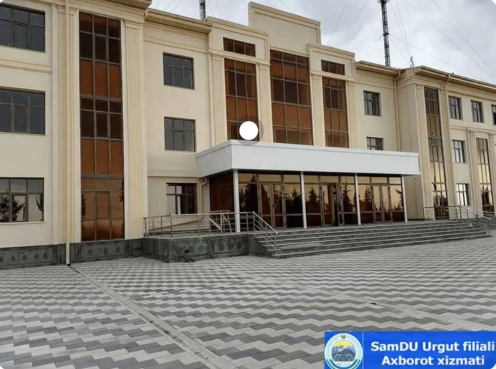
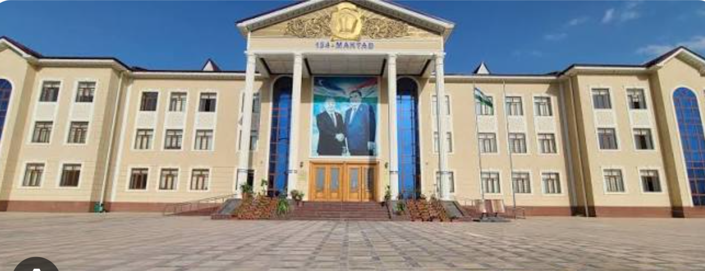

Urgut tumani
Urgut tumani- Bosh sahifa
- Xizmatlar
- Ta'lim
Ta'lim
Maktablar, ixtisoslashgan maktab va oliy ta'lim.

Ixtisoslashgan maktab
Aniq fanlarga ixtisoslashgan iqtidorli o'quvchilar maktabi
Samarqand viloyati hokimining 2020-yil 1-iyuldagi qaroriga ko'ra, SamDU ning Urgutdagi 3-akademik litseyi bino…
Batafsil
Oliy ta'lim
Samarqand pedagogika instituti Urgut fakulteti
Tuman yoshlariga pedagogika yo'nalishlari bo'yicha oliy ta'limni o'z hududida olish imkonini beradi.
Batafsil
Maktab
Umumta'lim maktablari
Tumanda o'nlab davlat maktablari mahallalar kesimida joylashgan.
Batafsil| Nomi | Turi |
|---|---|
| Aniq fanlarga ixtisoslashgan iqtidorli o'quvchilar maktabi | Ixtisoslashgan maktab |
| Samarqand pedagogika instituti Urgut fakulteti | Oliy ta'lim |
| Umumta'lim maktablari | Maktab |